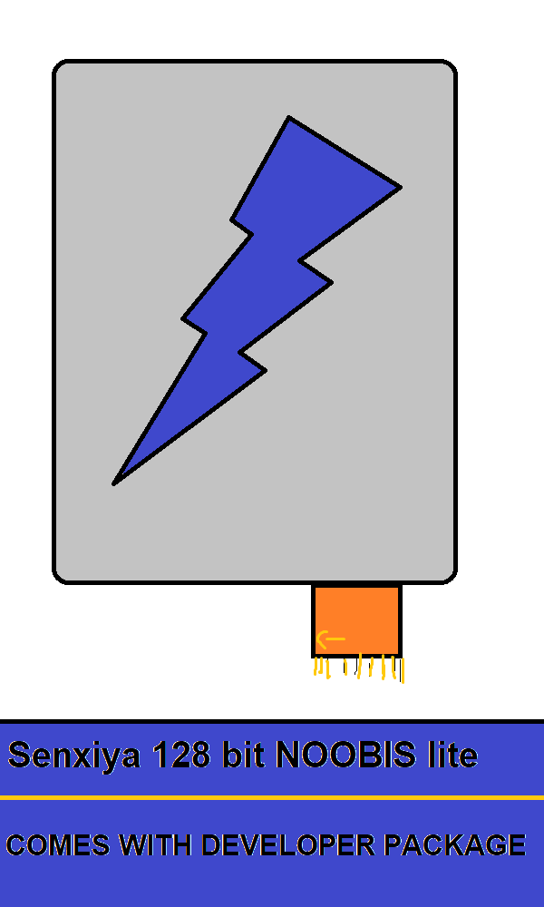
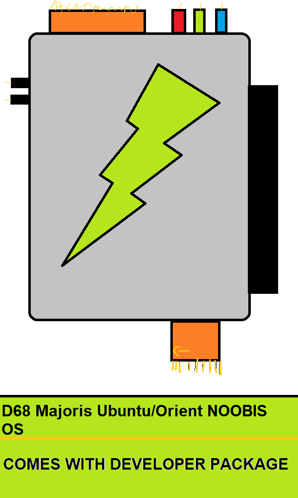
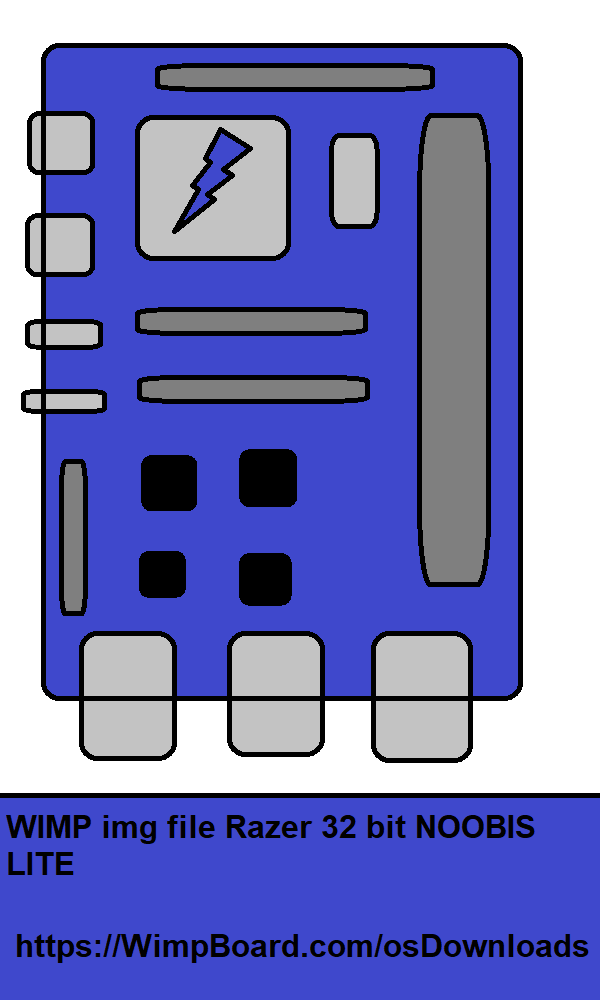
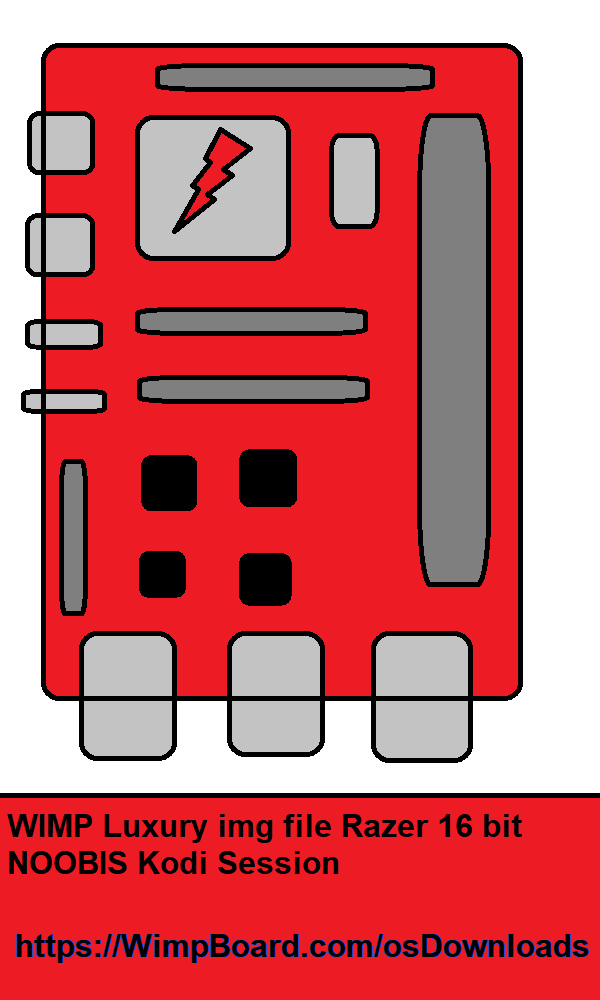

Wimplux Operating System Installaion and guidance
The Wimplux OS is a 128 bit operating system designed in 1991 and had been developing since 1993. these downloads are for Senxiya, D68, and WIMP boards we used to sell up until 2019(If you have one you might just be in luck!). Consumers may only install OS’ for WIMP boards. Developers can install both WIMP and consumer laptop Operating Systems if he or she has MD2 access.




Click here for guidance on WIMP board OS Installaion